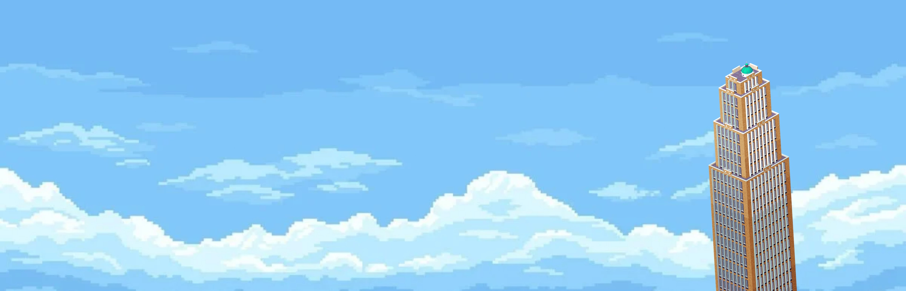
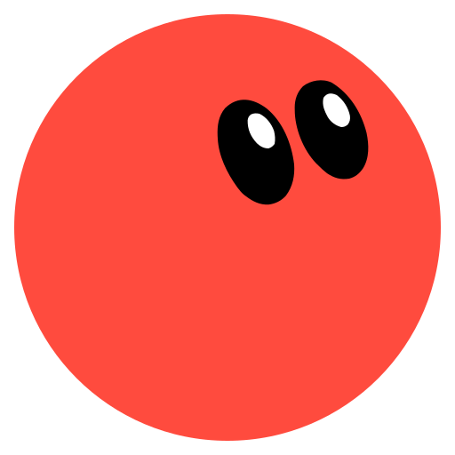

NUESTRO JUEGO EN DESARROLLO
Wordhood
Una ciudad empieza
con una palabra.
Encuentra palabras. Genera recursos.
Haz crecer una ciudad que sientas tuya.
Encuentra palabras.
Construye posibilidades.
Una sopa de letras con mucho más entre líneas. En Wordhood, cada palabra que encuentras se convierte en recursos para hacer crecer y cuidar tu ciudad.
La satisfacción de resolver un tablero se une al placer de ver cómo tu pequeño mundo sigue creciendo.
Echa un vistazo al juegoEl siguiente capítulo se está escribiendo.
Steam · próximamenteDe las letras a la ciudad.
Un pequeño vistazo al mundo que estamos creando.
Más de Wordhood, en movimiento.
El tráiler llegará a este espacio.

Soy Alejandro.
Y esto es Aloid Games.
Vivo en Barcelona y estudié desarrollo de videojuegos en 2021. Desde entonces he trabajado en proyectos para terceros. Ahora quiero dar forma a mis propias ideas.
Aloid Games nace de esas ganas de crear: empezar por un juego, construir una comunidad y, con el tiempo, hacer crecer el estudio.
Wordhood es parte de ese camino. Un juego que se me ocurrió cuando mi abuela me pidió un librito para hacer sopas de letras.
¡Nos vemos!